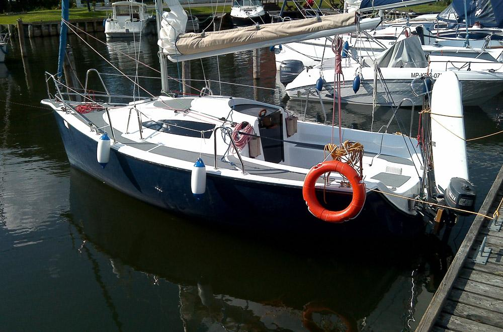

Sasanka Viva 600
Nasza ulubiona łajba. Najmniejsza i najfajniejsza, jaką dotąd pływaliśmy.
Nasza ulubiona łajba. Najmniejsza i najfajniejsza, jaką dotąd pływaliśmy.
Najładniejsza łajba. Największa (chyba), jaką widzieliśmy na wodzie.
Chyba najlepsza łajba. Długością mieści się między poprzednimi dwiema (dwoma?), wydaje się optymalna.
A jaka ładna, no zoba, popa.